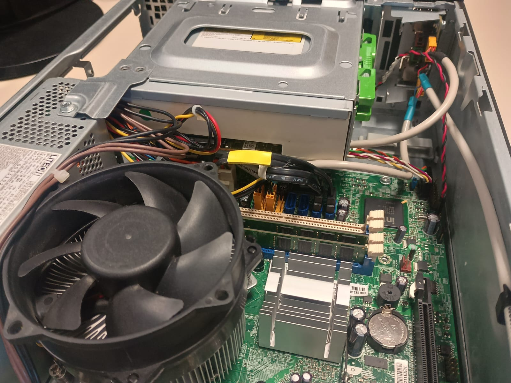
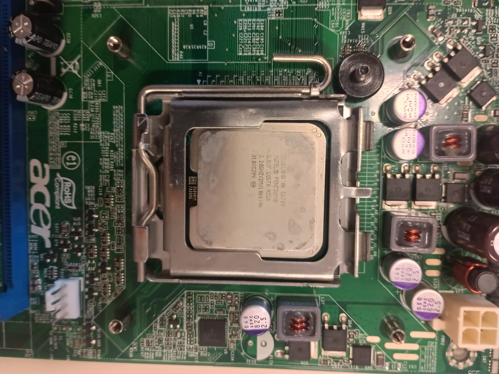

Cosa ho fatto
Un riepilogo delle attività svolte durante l'esperienza Monta e Smonta

Durante questa esperienza, ho smontato e rimontato computer desktop, sostituito componenti hardware come RAM e CPU, e diagnosticato problemi hardware.

Ho acquisito competenze pratiche nell'assemblaggio di PC, nella manutenzione hardware e nella risoluzione di problemi tecnici, lavorando in un ambiente collaborativo.